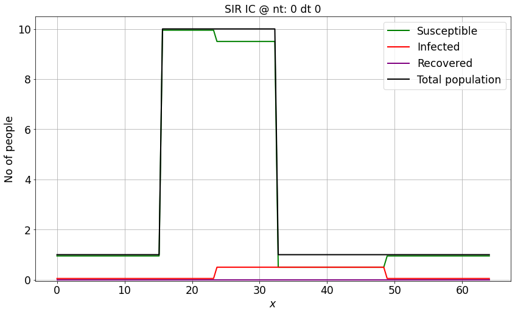
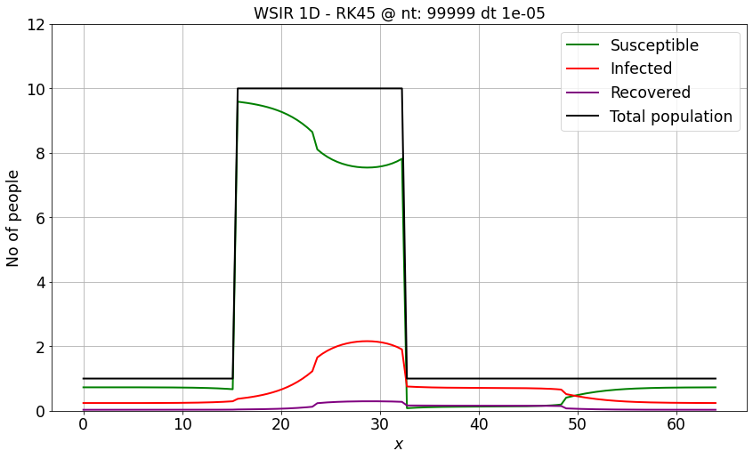
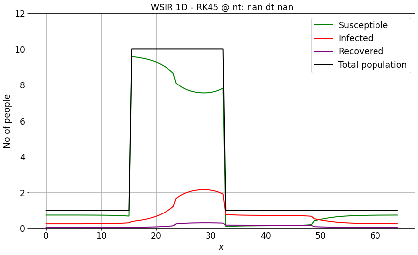
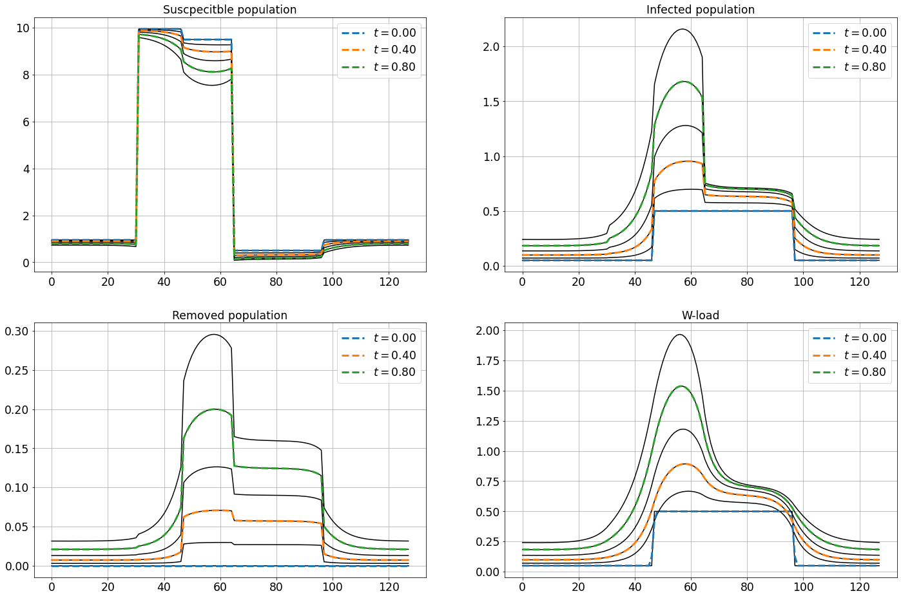
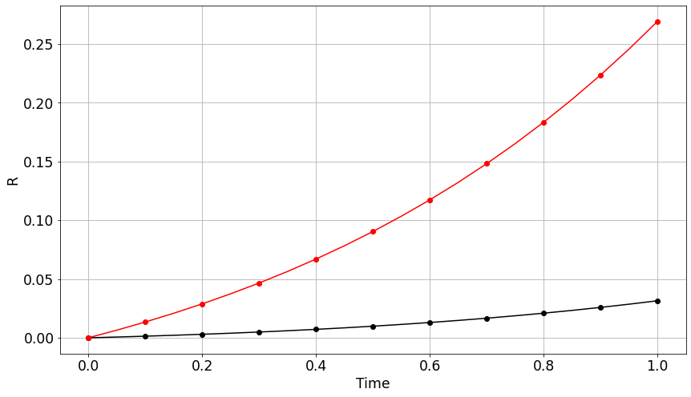
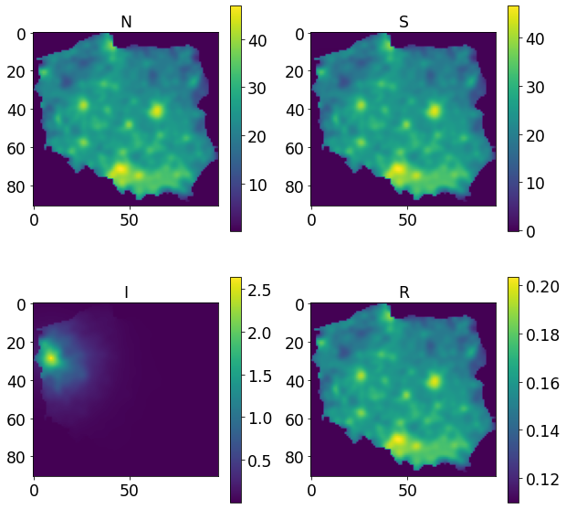
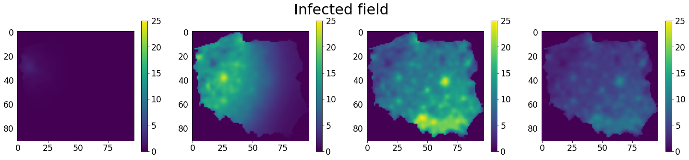
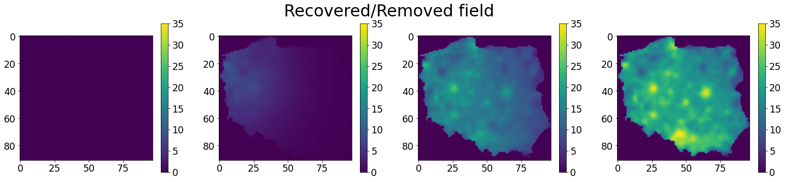
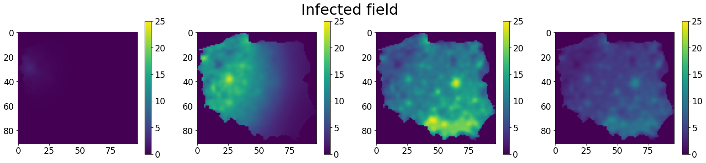
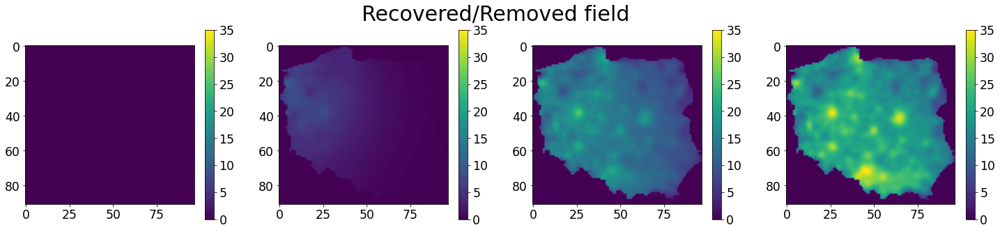

import h5py
import numpy as np
import matplotlib.pyplot as plt
import CLB.CLBXMLWriter as CLBXML
import tempfile
import scipy.optimize as so
from display_xml import XML
import sympy
Notes on LBM dt in nonlinear reactions¶
d2q9_reaction_diffusion_system_SIR_ModifiedPeng¶
or the WSIR model, aleready referenced in this workshop
\[\begin{split}
\frac{\partial}{\partial t} W = \beta_W \left[\frac{r^2}{8}W + (I-W) \right] \\
\frac{\partial}{\partial t} S = - \beta \frac{S}{N}W\\
\frac{\partial}{\partial t} I = \beta \frac{S}{N}W - \gamma I \\
\frac{\partial}{\partial t} R = \gamma I
\end{split}\]
\( t = \tilde{t}*\delta t \)
\[\begin{split}
\frac{\partial}{\partial \tilde{t}} W = \frac{\beta_W}{\delta t} \left[\frac{r^2}{8}W + (I-W) \right] \\
\frac{\partial}{\partial \tilde{t}} S = - \frac{\beta}{\delta t}\frac{S}{N}W\\
\frac{\partial}{\partial \tilde{t}} I = \frac{\beta}{\delta t} \frac{S}{N}W - \gamma I \\
\frac{\partial}{\partial \tilde{t}} R = \frac{\gamma}{\delta t} I
\end{split}\]
import sys
sys.path.append("..")
from utils.sir_plot_utils import *
def WSIR_1D_FD(S, I, R, nx, dx, r0, beta_sir, gamma_sir, nt, dt, beta_W=1e2):
W = I.copy()
N = S + I + R
c_ind = np.arange(0, nx)
l_ind = np.roll(c_ind, -1)
r_ind = np.roll(c_ind, 1)
for n in range(nt): # iterate through time
lap_W = (W[l_ind] - 2 * W[c_ind] + W[r_ind]) / dx ** 2
qW_spatial = (r0 * r0 / 8.)*lap_W
# qW_spatial = np.zeros(nx)
qW = dt * beta_W * (qW_spatial + (I - W))
qS2I = dt * beta_sir * S * W/N
qI2R = dt * gamma_sir * I
W = W + qW
S = S - qS2I
I = I + qS2I - qI2R
R = R + qI2R
return S, I, R, W
We could use build-in IVP solvers for such prepared stencil¶
from scipy.integrate import solve_ivp
nx = 128
domain_length = 64
dx = domain_length / (nx-1)
xspace = np.linspace(0, domain_length, nx)
# r0 = 5.5 # infectious radius
# beta_sir = 3.01 # the average number of contacts per person per time
# gamma_sir = 1/2.8 # 1 over days to recovery
# beta_W = 1e3
r0 = 5.5 # infectious radius
gamma_sir = 0.25 # 1 over days to recovery
beta_sir = 3.01 * 2.8 * gamma_sir
t_scale = 1 #gamma_sir / (1./2.8)
beta_W = 1e3 / t_scale
total_time = 1e-0
dt = 1e-5
ntimesteps = int(total_time / dt)
N = np.ones(nx)
N[int((nx-1)/4):int(nx/2 + 1)] *= 10
I_IC = 0.05* np.ones(nx)
I_IC[int(3*(nx-1)/8):int(6*nx/8 + 1)] *= 10
S_IC = N - I_IC
R_IC = np.zeros(nx)
y_lim = [-0.05, 1.05*max(N)]
c_ind = np.arange(0, nx)
l_ind = np.roll(c_ind, -1)
r_ind = np.roll(c_ind, 1)
def WSIR_1D_FD_VRK(t, z, nx, dx, r0, beta_sir, gamma_sir, beta_W):
tmp = z.reshape((4,int(z.shape[0]/4)))
W = tmp[0,:]
S = tmp[1,:]
I = tmp[2,:]
R = tmp[3,:]
lap_W = (W[l_ind] - 2 * W[c_ind] + W[r_ind]) / dx ** 2
qW_spatial = (r0 * r0 / 8.)*lap_W
qW = beta_W * (qW_spatial + (I - W))
qS2I = beta_sir * S * W/N
qI2R = gamma_sir * I
return np.array([qW, - qS2I, qS2I - qI2R, qI2R]).reshape((4*nx))
IC = np.array([I_IC, S_IC, I_IC, R_IC]).reshape((4*nx))
days_to_simulate = 1
sol = solve_ivp(WSIR_1D_FD_VRK,
[0, days_to_simulate],
IC,
method='RK45',
args=[nx, dx, r0, beta_sir, gamma_sir, beta_W],
dense_output=True)
t = np.linspace(0, days_to_simulate, 21)
z = sol.sol(t)
tmp = z.reshape((4, int(z.shape[0]/4), len(t)))
W_rk45 = tmp[0,:,:]
S_rk45 = tmp[1,:,:]
I_rk45 = tmp[2,:,:]
R_rk45 = tmp[3,:,:]
Explicit Euler and RK45 solutions are close-to-identical¶
from utils.sir_plot_utils import make_wsir_plot_1D
make_wsir_plot_1D(S_IC, I_IC, R_IC, xspace, 0, 0, 'SIR IC', w=None, y_lim=y_lim)

Sw, Iw, Rw, Ww = WSIR_1D_FD(S_IC, I_IC, R_IC, nx, dx, r0, beta_sir, gamma_sir, ntimesteps, dt, beta_W)
make_wsir_plot_1D(Sw, Iw, Rw, xspace, ntimesteps, dt, 'WSIR 1D - RK45', y_lim=(0,12))

make_wsir_plot_1D(S_rk45[:,-1], I_rk45[:,-1], R_rk45[:,-1], xspace, np.nan, np.nan, 'WSIR 1D - RK45', y_lim=(0,12))

Let’s build LBM solution using TCLB and d2q9_reaction_diffusion_system_SIR_ModifiedPeng model¶
There is gonna be units change: LBM has “dt” equall 1, while we obsiously need some small dt in real units - for example expressed as a fraction of specific time \(1/\gamma\). Please also be carefull at:
1 / 1e-5
1 / (dt_LBM * 1e6) * 1e6
np.savetxt("S_IC.csv", S_IC, delimiter=",")
np.savetxt("I_IC.csv", I_IC, delimiter=",")
np.savetxt("R_IC.csv", R_IC, delimiter=",")
dt_LBM = 1.e-5
R_LBM = r0 / dx
Beta_LBM = beta_sir * dt_LBM
Beta_w_LBM = beta_W * dt_LBM
Gamma_LBM = gamma_sir * dt_LBM
CLBc = CLBXML.CLBConfigWriter( )
CLBc.addGeomParam('nx', S_IC.shape[0])
CLBc.addGeomParam('ny', 2)
CLBc.addRunR(eval=\
"""
init = read.table("S_IC.csv", header = FALSE, sep = "", dec = ".");
Solver$Fields$Init_S_External[] = init[,1];
init = read.table("I_IC.csv", header = FALSE, sep = "", dec = ".");
Solver$Fields$Init_I_External[] = init[,1];
Solver$Fields$Init_W_External[] = init[,1];
init = read.table("R_IC.csv", header = FALSE, sep = "", dec = ".");
Solver$Fields$Init_R_External[] = init[,1];
# and N
Solver$Fields$Init_N_External[] = Solver$Fields$Init_S_External[] + Solver$Fields$Init_I_External[] + Solver$Fields$Init_R_External[];
Solver$Actions$InitFromExternalAction();
""")
params = {
"Diffusivity_W": Beta_w_LBM * R_LBM**2 / 8.,
"Init_W": 1,
"Init_S": 0,
"Init_I": 0,
"Init_R": 1,
"Init_N": 1,
"Beta": Beta_LBM,
"Beta_w": Beta_w_LBM,
"Gamma": Gamma_LBM,
}
CLBc.addModelParams(params)
T = int( 1 / (dt_LBM * 1e6) * 1e6 )
CLBc.addHDF5()
solve = CLBc.addSolve(iterations=T)
CLBc.addHDF5(Iterations=int(T/10), parent=solve)
CLBc.write('WSIR_1DExample.xml')
f = open('WSIR_1DExample.xml', 'r')
XML(''.join(f.readlines()))
<CLBConfig version="2.0" output="output/">
<!--Created using CLBConfigWriter-->
<Geometry predef="none" model="MRT" nx="128.0000000000000000" ny="2.0000000000000000"/>
<Model>
<Param name="Diffusivity_W" value="0.1488959503173828"/>
<Param name="Init_W" value="1.0000000000000000"/>
<Param name="Init_S" value="0.0000000000000000"/>
<Param name="Init_I" value="0.0000000000000000"/>
<Param name="Init_R" value="1.0000000000000000"/>
<Param name="Init_N" value="1.0000000000000000"/>
<Param name="Beta" value="0.0000210700000000"/>
<Param name="Beta_w" value="0.0100000000000000"/>
<Param name="Gamma" value="0.0000025000000000"/>
</Model>
<RunR>
init = read.table("S_IC.csv", header = FALSE, sep = "", dec = ".");
Solver$Fields$Init_S_External[] = init[,1];
init = read.table("I_IC.csv", header = FALSE, sep = "", dec = ".");
Solver$Fields$Init_I_External[] = init[,1];
Solver$Fields$Init_W_External[] = init[,1];
init = read.table("R_IC.csv", header = FALSE, sep = "", dec = ".");
Solver$Fields$Init_R_External[] = init[,1];
# and N
Solver$Fields$Init_N_External[] = Solver$Fields$Init_S_External[] + Solver$Fields$Init_I_External[] + Solver$Fields$Init_R_External[];
Solver$Actions$InitFromExternalAction();
</RunR>
<HDF5/>
<Solve Iterations="100000">
<HDF5 Iterations="10000"/>
</Solve>
</CLBConfig>
! OMP_NUM_THREADS=8 tclb d2q9_reaction_diffusion_system_SIR_ModifiedPeng WSIR_1DExample.xml && echo 'DONE!'
MPMD: TCLB: local:0/1 work:0/1 --- connected to:
[ ] -------------------------------------------------------------------------
[ ] - CLB version: v6.5.0-80-g8955a884 -
[ ] - Model: d2q9_reaction_diffusion_system_SIR_ModifiedPeng
[ ] -
[ ] -------------------------------------------------------------------------
[ ] Setting output path to: WSIR_1DExample
[ ] Discarding 1 comments
[ 0] Running on CPU
[ 0] WARNING: No "Units" element in config file
[ ] Mesh size in config file: 128x2x1
[ ] Global lattice size: 128x2x1
[ ] Max region size: 256. Mesh size 256. Overhead: 0%
[ ] Local lattice size: 128x2x1
Hello allocator!
[ ] Threads | Action
[ ] 1x1 | Primal , NoGlobals , InitFromExternal
[ ] 1x1 | Tangent , NoGlobals , InitFromExternal
[ ] 1x1 | Optimize , NoGlobals , InitFromExternal
[ ] 1x1 | SteadyAdjoint , NoGlobals , InitFromExternal
[ ] 1x1 | Primal , IntegrateGlobals , InitFromExternal
[ ] 1x1 | Tangent , IntegrateGlobals , InitFromExternal
[ ] 1x1 | Optimize , IntegrateGlobals , InitFromExternal
[ ] 1x1 | SteadyAdjoint , IntegrateGlobals , InitFromExternal
[ ] 1x1 | Primal , OnlyObjective , InitFromExternal
[ ] 1x1 | Tangent , OnlyObjective , InitFromExternal
[ ] 1x1 | Optimize , OnlyObjective , InitFromExternal
[ ] 1x1 | SteadyAdjoint , OnlyObjective , InitFromExternal
[ ] 1x1 | Primal , NoGlobals , BaseIteration
[ ] 1x1 | Tangent , NoGlobals , BaseIteration
[ ] 1x1 | Optimize , NoGlobals , BaseIteration
[ ] 1x1 | SteadyAdjoint , NoGlobals , BaseIteration
[ ] 1x1 | Primal , IntegrateGlobals , BaseIteration
[ ] 1x1 | Tangent , IntegrateGlobals , BaseIteration
[ ] 1x1 | Optimize , IntegrateGlobals , BaseIteration
[ ] 1x1 | SteadyAdjoint , IntegrateGlobals , BaseIteration
[ ] 1x1 | Primal , OnlyObjective , BaseIteration
[ ] 1x1 | Tangent , OnlyObjective , BaseIteration
[ ] 1x1 | Optimize , OnlyObjective , BaseIteration
[ ] 1x1 | SteadyAdjoint , OnlyObjective , BaseIteration
[ ] 1x1 | Primal , NoGlobals , BaseInit
[ ] 1x1 | Tangent , NoGlobals , BaseInit
[ ] 1x1 | Optimize , NoGlobals , BaseInit
[ ] 1x1 | SteadyAdjoint , NoGlobals , BaseInit
[ ] 1x1 | Primal , IntegrateGlobals , BaseInit
[ ] 1x1 | Tangent , IntegrateGlobals , BaseInit
[ ] 1x1 | Optimize , IntegrateGlobals , BaseInit
[ ] 1x1 | SteadyAdjoint , IntegrateGlobals , BaseInit
[ ] 1x1 | Primal , OnlyObjective , BaseInit
[ ] 1x1 | Tangent , OnlyObjective , BaseInit
[ ] 1x1 | Optimize , OnlyObjective , BaseInit
[ ] 1x1 | SteadyAdjoint , OnlyObjective , BaseInit
[ ] [0] Cumulative allocation of 103424 b (103.4 kB)
[ ] Creating geom size:256
[ ] Setting output path to: WSIR_1DExample
[ ] Setting output path to: output/WSIR_1DExample
[ ] loading geometry ...
[ ] Setting number of zones to 1
[ ] Setting Diffusivity_W to 0.1488959503173828 (0.148896)
[ ] [0] Settings [Diffusivity for _W] to 0.148896
[ ] Setting Init_W in zone (-1) to 1.0000000000000000 (1.000000)
[ ] Setting Init_S in zone (-1) to 0.0000000000000000 (0.000000)
[ ] Setting Init_I in zone (-1) to 0.0000000000000000 (0.000000)
[ ] Setting Init_R in zone (-1) to 1.0000000000000000 (1.000000)
[ ] Setting Init_N in zone (-1) to 1.0000000000000000 (1.000000)
[ ] Setting Beta to 0.0000210700000000 (0.000021)
[ ] [0] Settings [Model parameter Beta] to 0.000021
[ ] Setting Beta_w to 0.0100000000000000 (0.010000)
[ ] [0] Settings [Model parameter Beta_w] to 0.010000
[ ] Setting Gamma to 0.0000025000000000 (0.000003)
[ ] [0] Settings [Model parameter Gamma] to 0.000003
[ ] Initializing Lattice ...
[ ] Callback RunR with no Iterations attribute==] 2661h 11m
[ ] R: Initializing R environment ...
[ ] cdata
[ ] 0 it Running R ...
[ ] ----- RunR -----
[ ]
init = read.table("S_IC.csv", header = FALSE, sep = "", dec = ".");
Sol
[ ] ver$Fields$Init_S_External[] = init[,1];
init = read.table("I_IC.csv",
[ ] header = FALSE, sep = "", dec = ".");
Solver$Fields$Init_I_External[] = init
[ ] [,1];
Solver$Fields$Init_W_External[] = init[,1];
init = read.table("R
[ ] _IC.csv", header = FALSE, sep = "", dec = ".");
Solver$Fields$Init_R_Externa
[ ] l[] = init[,1];
# and N
Solver$Fields$Init_N_External[] = Solver$Fields
[ ] $Init_S_External[] + Solver$Fields$Init_I_External[] + Solver$Fields$Init_R_Exte
[ ] rnal[];
Solver$Actions$InitFromExternalAction();
[ ] ----------------
[ ] You can run interactive R session with Ctrl+X
[ ] Callback HDF5 with no Iterations attribute
[ ] Negotiated HDF5 chunks: 1x2x128[x3]
[ ] 0 it writing hdf5
[ ] Setting action Solve at 100000.000000 iterations
[ ] Setting callback HDF5 at 10000.000000 iterations
[ ] Negotiated HDF5 chunks: 1x2x128[x3]
[ ] Adding HDF5 to the solver hands
[ ] 1.0 MLBUps 0.22 GB/s [====================]1m
[ ] 10000 it writing hdf5
[ ] 0.8 MLBUps 0.17 GB/s [====================]
[ ] 20000 it writing hdf5
[ ] 0.3 MLBUps 0.06 GB/s [====================]
[ ] 30000 it writing hdf5
[ ] 0.4 MLBUps 0.10 GB/s [====================]
[ ] 40000 it writing hdf5
[ ] 0.3 MLBUps 0.08 GB/s [====================]
[ ] 50000 it writing hdf5
[ ] 0.6 MLBUps 0.13 GB/s [====================]
[ ] 60000 it writing hdf5
[ ] 0.6 MLBUps 0.13 GB/s [====================]
[ ] 70000 it writing hdf5
[ ] 0.5 MLBUps 0.10 GB/s [====================]
[ ] 80000 it writing hdf5
[ ] 0.4 MLBUps 0.09 GB/s [====================]
[ ] 90000 it writing hdf5
[ ] 0.4 MLBUps 0.10 GB/s [====================]
[ ] 100000 it writing hdf5
[ ] Total duration: 346.480693 s = 5.774678 min = 0.096245 h
DONE!
plt.figure(figsize=(24,16))
plt.subplot(221)
plt.title('Suscpecitble population')
plt.plot(S_rk45[:,::4], 'k-')
for i in np.arange(0,T,T/10)[::4]:
f = h5py.File('./output/WSIR_1DExample_HDF5_%08d.h5'%i)
#plt.plot(f['ODE_1'][0,0,:], '--')
#plt.plot(f['ODE_2'][0,0,:], '--')
plt.plot(f['S'][0,0,:], '--', lw=3, label=r'$t=%.2f$'%(i*dt_LBM))
plt.legend()
plt.grid(which='both')
plt.subplot(222)
plt.title('Infected population')
plt.plot(I_rk45[:,::4], 'k-')
for i in np.arange(0,T,T/10)[::4]:
f = h5py.File('./output/WSIR_1DExample_HDF5_%08d.h5'%i)
#plt.plot(f['ODE_1'][0,0,:], '--')
#plt.plot(f['ODE_2'][0,0,:], '--')
plt.plot(f['I'][0,0,:], '--', lw=3, label=r'$t=%.2f$'%(i*dt_LBM))
plt.legend()
plt.grid(which='both')
plt.subplot(223)
plt.title('Removed population')
plt.plot(R_rk45[:,::4], 'k-')
for i in np.arange(0,T,T/10)[::4]:
f = h5py.File('./output/WSIR_1DExample_HDF5_%08d.h5'%i)
#plt.plot(f['ODE_1'][0,0,:], '--')
#plt.plot(f['ODE_2'][0,0,:], '--')
plt.plot(f['R'][0,0,:], '--', lw=3, label=r'$t=%.2f$'%(i*dt_LBM))
plt.legend()
plt.grid(which='both')
plt.subplot(224)
plt.title('W-load')
plt.plot(W_rk45[:,::4], 'k-')
for i in np.arange(0,T,T/10)[::4]:
f = h5py.File('./output/WSIR_1DExample_HDF5_%08d.h5'%i)
#plt.plot(f['ODE_1'][0,0,:], '--')
#plt.plot(f['ODE_2'][0,0,:], '--')
plt.plot(f['W'][0,0,:], '--', lw=3, label=r'$t=%.2f$'%(i*dt_LBM))
plt.legend()
plt.grid(which='both')

We could also compare evolution of SIR variables at point in space¶
#make_wsir_plot_1D(Sw, Iw, Rw, xspace, ntimesteps, dt, 'WSIR 1D', y_lim=(0,12))
#plt.plot(Sw, '-')
#plt.plot(Iw, '-')
#plt.plot(t, S_rk45[0,:], '-')
#plt.plot(t, I_rk45[0,:], '-')
plt.plot(t,R_rk45[0,:], 'k-')
plt.plot(t,R_rk45[50,:], 'r-')
#plt.plot(S)
#plt.plot(I)
#plt.plot(R, 'o-')
#plt.plot(W)
j = 0
for i in np.array(t/(dt_LBM*1e6)*1e6, dtype=int)[::2]:
f = h5py.File('./output/WSIR_1DExample_HDF5_%08d.h5'%i)
plt.plot(i*dt_LBM, f['R'][0,0,0], 'ko')
plt.plot(i*dt_LBM, f['R'][0,0,50], 'ro')
plt.xlabel('Time')
plt.ylabel('R')
plt.grid(which='both')

Read “wall” map into TCLB¶
from skimage import data, filters, color, morphology
from skimage.transform import rescale, resize, downscale_local_mean
from skimage.segmentation import flood, flood_fill
from PIL import Image
import requests
from io import BytesIO
#url = 'https://upload.wikimedia.org/wikipedia/commons/f/fc/Poland_wordmark2.png'
#response = requests.get(url)
#img = Image.open(BytesIO(response.content))
img_org = np.array(Image.open('512px-Population_density_in_Poland.png'))
plt.figure(figsize=(10,10))
plt.imshow(img_org)
<matplotlib.image.AxesImage at 0x7f834c44cf10>
plt.figure(figsize=(10,10))
img = img_org[45:500,15:500,:]
plt.imshow(img)
<matplotlib.image.AxesImage at 0x7f835b19e430>
plt.figure(figsize=(10,10))
legend = img_org[520:522,90:390,:]
plt.imshow(legend)
<matplotlib.image.AxesImage at 0x7f834c38d970>
plt.plot(legend[0,:,0],'r')
plt.plot(legend[0,:,1],'g')
plt.plot(legend[0,:,2], 'b')
[<matplotlib.lines.Line2D at 0x7f834c2f7910>]
plt.figure(figsize=(10,10))
plt.imshow(img[:,:,2])
<matplotlib.image.AxesImage at 0x7f834c2c7b20>
plt.figure(figsize=(10,10))
img[445:,:300,:] = img[0,0,:]
plt.imshow(img)
<matplotlib.image.AxesImage at 0x7f834c237640>
plt.figure(figsize=(10,10))
country_map_zero = np.copy(img)
#country_map[ (img[:,:,2] == img[0,0,2]) * (img[:,:,1] == img[0,0,1]) ] = -1
country_map_zero = country_map_zero[:,:,2]
#
plt.imshow(country_map_zero[:,:])
plt.colorbar()
<matplotlib.colorbar.Colorbar at 0x7f834c1bdd30>
country_map = rescale(country_map_zero, 0.2,anti_aliasing=False)
plt.figure(figsize=(10,10))
plt.imshow(country_map)
plt.colorbar()
country_map_binary = flood_fill(country_map >= 245./255., (1,1), 1)
country_map_binary = morphology.binary_opening(country_map_binary, np.ones((2,2)))
plt.figure(figsize=(10,10))
plt.imshow(country_map_binary)
<matplotlib.image.AxesImage at 0x7f834c0e23d0>
np.savetxt('input.txt',country_map_binary.T, fmt="%d")
density_map = 1-np.array(country_map, dtype=float)
density_map[country_map_binary==1] = 0
plt.figure(figsize=(10,10))
plt.imshow(density_map)
plt.colorbar()
<matplotlib.colorbar.Colorbar at 0x7f834c01cfd0>
init_binfile = open('init.bin', 'wb')
init_binfile.write(density_map)
init_binfile.close()
We will use TCLB to blurr image a little, while obeying BC¶
CLBc = CLBXML.CLBConfigWriter( )
CLBc.addGeomParam('nx', country_map_binary.shape[1])
CLBc.addGeomParam('ny', country_map_binary.shape[0])
CLBc.addWall(name='foreign')
CLBc.addText(file='input.txt')
params = {
"Diffusivity_PHI" : 1./6.,
"Init_PHI":0.0,
}
dim = country_map_binary.shape
CLBc.addModelParams(params)
params = {
"Diffusivity_PHI" : 1./6.,
"Init_PHI":0.0,
}
CLBc.addModelParams(params, zone='foreign')
CLBc.addRunR(eval=\
f"""
infile <- "init.bin"
con <- file(infile, "rb")
pic <- matrix( readBin(con, "numeric", prod({dim[0]*dim[1]})), {dim[1]},{dim[0]})
close(con)
Solver$Fields$Init_PHI_External[] = pic;
Solver$Actions$InitFromExternalAction();
""")
CLBc.addHDF5()
T=5
solve = CLBc.addSolve(iterations=T)
CLBc.addHDF5()
CLBc.write('run-blurr.xml')
! tclb d2q9_reaction_diffusion_system_SimpleDiffusion run-blurr.xml&& echo "DONE"
plt.figure(figsize=(10,10))
i = 0
f = h5py.File('./output/run-blurr_HDF5_%08d.h5'%i)
plt.imshow(f['PHI'][0,:,:])
plt.colorbar()
plt.figure(figsize=(10,10))
i = T
f = h5py.File('./output/run-blurr_HDF5_%08d.h5'%i)
plt.imshow(f['PHI'][0,:,:])
plt.colorbar()
plt.figure()
MPMD: TCLB: local:0/1 work:0/1 --- connected to:
[ ] -------------------------------------------------------------------------
[ ] - CLB version: v6.5.0-73-g4654a377 -
[ ] - Model: d2q9_reaction_diffusion_system_SimpleDiffusion
[ ] -
[ ] -------------------------------------------------------------------------
[ ] Setting output path to: run-blurr
[ ] Discarding 1 comments
[ 0] Running on CPU
[ 0] WARNING: No "Units" element in config file
[ ] Mesh size in config file: 97x91x1
[ ] Global lattice size: 97x91x1
[ ] Max region size: 8827. Mesh size 8827. Overhead: 0%
[ ] Local lattice size: 97x91x1
Hello allocator!
[ ] Threads | Action
[ ] 1x1 | Primal , NoGlobals , InitFromExternal
[ ] 1x1 | Tangent , NoGlobals , InitFromExternal
[ ] 1x1 | Optimize , NoGlobals , InitFromExternal
[ ] 1x1 | SteadyAdjoint , NoGlobals , InitFromExternal
[ ] 1x1 | Primal , IntegrateGlobals , InitFromExternal
[ ] 1x1 | Tangent , IntegrateGlobals , InitFromExternal
[ ] 1x1 | Optimize , IntegrateGlobals , InitFromExternal
[ ] 1x1 | SteadyAdjoint , IntegrateGlobals , InitFromExternal
[ ] 1x1 | Primal , OnlyObjective , InitFromExternal
[ ] 1x1 | Tangent , OnlyObjective , InitFromExternal
[ ] 1x1 | Optimize , OnlyObjective , InitFromExternal
[ ] 1x1 | SteadyAdjoint , OnlyObjective , InitFromExternal
[ ] 1x1 | Primal , NoGlobals , BaseIteration
[ ] 1x1 | Tangent , NoGlobals , BaseIteration
[ ] 1x1 | Optimize , NoGlobals , BaseIteration
[ ] 1x1 | SteadyAdjoint , NoGlobals , BaseIteration
[ ] 1x1 | Primal , IntegrateGlobals , BaseIteration
[ ] 1x1 | Tangent , IntegrateGlobals , BaseIteration
[ ] 1x1 | Optimize , IntegrateGlobals , BaseIteration
[ ] 1x1 | SteadyAdjoint , IntegrateGlobals , BaseIteration
[ ] 1x1 | Primal , OnlyObjective , BaseIteration
[ ] 1x1 | Tangent , OnlyObjective , BaseIteration
[ ] 1x1 | Optimize , OnlyObjective , BaseIteration
[ ] 1x1 | SteadyAdjoint , OnlyObjective , BaseIteration
[ ] 1x1 | Primal , NoGlobals , BaseInit
[ ] 1x1 | Tangent , NoGlobals , BaseInit
[ ] 1x1 | Optimize , NoGlobals , BaseInit
[ ] 1x1 | SteadyAdjoint , NoGlobals , BaseInit
[ ] 1x1 | Primal , IntegrateGlobals , BaseInit
[ ] 1x1 | Tangent , IntegrateGlobals , BaseInit
[ ] 1x1 | Optimize , IntegrateGlobals , BaseInit
[ ] 1x1 | SteadyAdjoint , IntegrateGlobals , BaseInit
[ ] 1x1 | Primal , OnlyObjective , BaseInit
[ ] 1x1 | Tangent , OnlyObjective , BaseInit
[ ] 1x1 | Optimize , OnlyObjective , BaseInit
[ ] 1x1 | SteadyAdjoint , OnlyObjective , BaseInit
[ ] [0] Cumulative allocation of 1431360 b (1.4 MB)
[ ] Creating geom size:8827
[ ] Setting output path to: run-blurr
[ ] Setting output path to: output/run-blurr
[ ] loading geometry ...
Region: 97x91x1 + 0,0,0
[ ] Reading file input.txt
[ ] Setting number of zones to 2
[ ] Setting Diffusivity_PHI to 0.1666666666666667 (0.166667)
[ ] [0] Settings [Diffusivity for _PHI] to 0.166667
[ ] Setting Init_PHI in zone (-1) to 0.0000000000000000 (0.000000)
[ ] Setting Diffusivity_PHI to 0.1666666666666667 (0.166667)
[ ] [0] Settings [Diffusivity for _PHI] to 0.166667
[ ] Setting Init_PHI in zone foreign (1) to 0.0000000000000000 (0.000000)
[ ] Initializing Lattice ...
[ ] Callback RunR with no Iterations attribute==] 2661h 13m
[ ] R: Initializing R environment ...
[ ] cdata
[ ] 0 it Running R ...
[ ] ----- RunR -----
[ ]
infile <- "init.bin"
con <- file(infile, "rb")
pic <- matrix( re
[ ] adBin(con, "numeric", prod(8827)), 97,91)
close(con)
Solver$Fiel
[ ] ds$Init_PHI_External[] = pic;
Solver$Actions$InitFromExternalAct
[ ] ion();
[ ] ----------------
[ ] You can run interactive R session with Ctrl+X
[ ] Callback HDF5 with no Iterations attribute
[ ] Negotiated HDF5 chunks: 1x91x97[x3]
[ ] 0 it writing hdf5
[ ] Setting action Solve at 5.000000 iterations
[ ] 44.3 MLBUps 7.17 GB/s [====================]3m
[ ] Callback HDF5 with no Iterations attribute
[ ] Negotiated HDF5 chunks: 1x91x97[x3]
[ ] 5 it writing hdf5
[ ] Total duration: 0.456425 s = 0.007607 min = 0.000127 h
DONE
<Figure size 1008x576 with 0 Axes>
<Figure size 1008x576 with 0 Axes>
i = T
f = h5py.File('./output/run-blurr_HDF5_%08d.h5'%i)
blured = np.copy(f['PHI'][0,:,:]) + 0.1
N0 = 50
X0=0.1*blured.shape[0]
Y0=0.3*blured.shape[1]
r_sick = 0.1*blured.shape[1]
X,Y = np.meshgrid(np.arange(blured.shape[1]), np.arange(blured.shape[0]))
R = np.sqrt((X-X0)**2+(Y-Y0)**2)
#init_binfile = open('init-blured.bin', 'wb')
#init_binfile.write()
#init_binfile.close()
I0_map = blured*np.exp(-R/r_sick)*N0*0.1
R0_map = blured*0.1 + 0.1
S0_map = (blured-0.1)*N0 - I0_map
plt.figure(figsize=(10,10))
plt.subplot(221)
plt.title('N')
plt.imshow(S0_map+I0_map+R0_map)
plt.colorbar()
plt.subplot(222)
plt.title('S')
plt.imshow(S0_map)
plt.colorbar()
plt.subplot(223)
plt.title('I')
plt.imshow(I0_map)
plt.colorbar()
plt.subplot(224)
plt.title('R')
plt.imshow(R0_map)
plt.colorbar()
init_binfile = open('init-map-S.bin', 'wb')
init_binfile.write(S0_map)
init_binfile.close()
init_binfile = open('init-map-I.bin', 'wb')
init_binfile.write(I0_map)
init_binfile.close()
init_binfile = open('init-map-R.bin', 'wb')
init_binfile.write(R0_map)
init_binfile.close()
init_binfile = open('init-map-N.bin', 'wb')
init_binfile.write(S0_map+R0_map+I0_map)
init_binfile.close()

dt_LBM = 1.e-4
R_LBM = np.sqrt(8./6./Beta_w_LBM)
Beta_LBM = beta_sir * dt_LBM
Beta_w_LBM = beta_W * dt_LBM
Gamma_LBM = gamma_sir * dt_LBM
CLBc = CLBXML.CLBConfigWriter( )
CLBc.addGeomParam('nx', country_map_binary.shape[1])
CLBc.addGeomParam('ny', country_map_binary.shape[0])
CLBc.addWall(name='foreign')
CLBc.addText(file='input.txt')
dim = country_map_binary.shape
CLBc.addRunR(eval=\
f"""
con <- file("init-map-S.bin", "rb")
init <- matrix( readBin(con, "numeric", prod({dim[0]*dim[1]})), {dim[1]},{dim[0]})
close(con)
Solver$Fields$Init_S_External[] = init;
con <- file("init-map-I.bin", "rb")
init <- matrix( readBin(con, "numeric", prod({dim[0]*dim[1]})), {dim[1]},{dim[0]})
close(con)
Solver$Fields$Init_I_External[] = init;
Solver$Fields$Init_W_External[] = init;
con <- file("init-map-R.bin", "rb")
init <- matrix( readBin(con, "numeric", prod({dim[0]*dim[1]})), {dim[1]},{dim[0]})
close(con)
Solver$Fields$Init_R_External[] = init;
# and N
Solver$Fields$Init_N_External[] = Solver$Fields$Init_S_External[] + Solver$Fields$Init_I_External[] + Solver$Fields$Init_R_External[];
Solver$Actions$InitFromExternalAction();
""")
params = {
"Diffusivity_W": Beta_w_LBM * R_LBM**2 / 8.,
"Init_W": 1,
"Init_S": 1,
"Init_I": 1,
"Init_R": 1,
"Init_N": 3,
"Beta": Beta_LBM,
"Beta_w": Beta_w_LBM,
"Gamma": Gamma_LBM,
}
CLBc.addModelParams(params)
T = int( 10 / (dt_LBM * 1e6) * 1e6 )
#T = 100000
CLBc.addHDF5()
solve = CLBc.addSolve(iterations=T,
failcheck_dx=dim[0]/2,
failcheck_dy=dim[1]/2,
failcheck_nx=10,
failcheck_ny=10,
failcheck=int(T/60),
failcheck_fields='DRE_1'
)
CLBc.addHDF5(Iterations=int(T/30), parent=solve)
CLBc.write('WSIR_CountryMap.xml')
f = open('WSIR_CountryMap.xml', 'r')
print(''.join(f.readlines()))
! tclb d2q9_reaction_diffusion_system_SIR_ModifiedPeng WSIR_CountryMap.xml && echo "DONE"
<CLBConfig version="2.0" output="output/">
<!--Created using CLBConfigWriter-->
<Geometry predef="none" model="MRT" nx="97.0000000000000000" ny="91.0000000000000000">
<Wall name="foreign" mask="ALL">
<Text file="input.txt"/>
</Wall>
</Geometry>
<Model>
<Param name="Diffusivity_W" value="1.6666666666666665"/>
<Param name="Init_W" value="1.0000000000000000"/>
<Param name="Init_S" value="1.0000000000000000"/>
<Param name="Init_I" value="1.0000000000000000"/>
<Param name="Init_R" value="1.0000000000000000"/>
<Param name="Init_N" value="3.0000000000000000"/>
<Param name="Beta" value="0.0002107000000000"/>
<Param name="Beta_w" value="0.1000000000000000"/>
<Param name="Gamma" value="0.0000250000000000"/>
</Model>
<RunR><![CDATA[
con <- file("init-map-S.bin", "rb")
init <- matrix( readBin(con, "numeric", prod(8827)), 97,91)
close(con)
Solver$Fields$Init_S_External[] = init;
con <- file("init-map-I.bin", "rb")
init <- matrix( readBin(con, "numeric", prod(8827)), 97,91)
close(con)
Solver$Fields$Init_I_External[] = init;
Solver$Fields$Init_W_External[] = init;
con <- file("init-map-R.bin", "rb")
init <- matrix( readBin(con, "numeric", prod(8827)), 97,91)
close(con)
Solver$Fields$Init_R_External[] = init;
# and N
Solver$Fields$Init_N_External[] = Solver$Fields$Init_S_External[] + Solver$Fields$Init_I_External[] + Solver$Fields$Init_R_External[];
Solver$Actions$InitFromExternalAction();
]]></RunR>
<HDF5/>
<Solve Iterations="100000">
<Failcheck Iterations="1666" nx="10" ny="10" nz="1" dx="45.5" dy="48.5" dz="1" what="DRE_1">
<VTK/>
</Failcheck>
<HDF5 Iterations="3333"/>
</Solve>
</CLBConfig>
MPMD: TCLB: local:0/1 work:0/1 --- connected to:
[ ] -------------------------------------------------------------------------
[ ] - CLB version: v6.5.0-80-g8955a884 -
[ ] - Model: d2q9_reaction_diffusion_system_SIR_ModifiedPeng
[ ] -
[ ] -------------------------------------------------------------------------
[ ] Setting output path to: WSIR_CountryMap
[ ] Discarding 1 comments
[ 0] Running on CPU
[ 0] WARNING: No "Units" element in config file
[ ] Mesh size in config file: 97x91x1
[ ] Global lattice size: 97x91x1
[ ] Max region size: 8827. Mesh size 8827. Overhead: 0%
[ ] Local lattice size: 97x91x1
Hello allocator!
[ ] Threads | Action
[ ] 1x1 | Primal , NoGlobals , InitFromExternal
[ ] 1x1 | Tangent , NoGlobals , InitFromExternal
[ ] 1x1 | Optimize , NoGlobals , InitFromExternal
[ ] 1x1 | SteadyAdjoint , NoGlobals , InitFromExternal
[ ] 1x1 | Primal , IntegrateGlobals , InitFromExternal
[ ] 1x1 | Tangent , IntegrateGlobals , InitFromExternal
[ ] 1x1 | Optimize , IntegrateGlobals , InitFromExternal
[ ] 1x1 | SteadyAdjoint , IntegrateGlobals , InitFromExternal
[ ] 1x1 | Primal , OnlyObjective , InitFromExternal
[ ] 1x1 | Tangent , OnlyObjective , InitFromExternal
[ ] 1x1 | Optimize , OnlyObjective , InitFromExternal
[ ] 1x1 | SteadyAdjoint , OnlyObjective , InitFromExternal
[ ] 1x1 | Primal , NoGlobals , BaseIteration
[ ] 1x1 | Tangent , NoGlobals , BaseIteration
[ ] 1x1 | Optimize , NoGlobals , BaseIteration
[ ] 1x1 | SteadyAdjoint , NoGlobals , BaseIteration
[ ] 1x1 | Primal , IntegrateGlobals , BaseIteration
[ ] 1x1 | Tangent , IntegrateGlobals , BaseIteration
[ ] 1x1 | Optimize , IntegrateGlobals , BaseIteration
[ ] 1x1 | SteadyAdjoint , IntegrateGlobals , BaseIteration
[ ] 1x1 | Primal , OnlyObjective , BaseIteration
[ ] 1x1 | Tangent , OnlyObjective , BaseIteration
[ ] 1x1 | Optimize , OnlyObjective , BaseIteration
[ ] 1x1 | SteadyAdjoint , OnlyObjective , BaseIteration
[ ] 1x1 | Primal , NoGlobals , BaseInit
[ ] 1x1 | Tangent , NoGlobals , BaseInit
[ ] 1x1 | Optimize , NoGlobals , BaseInit
[ ] 1x1 | SteadyAdjoint , NoGlobals , BaseInit
[ ] 1x1 | Primal , IntegrateGlobals , BaseInit
[ ] 1x1 | Tangent , IntegrateGlobals , BaseInit
[ ] 1x1 | Optimize , IntegrateGlobals , BaseInit
[ ] 1x1 | SteadyAdjoint , IntegrateGlobals , BaseInit
[ ] 1x1 | Primal , OnlyObjective , BaseInit
[ ] 1x1 | Tangent , OnlyObjective , BaseInit
[ ] 1x1 | Optimize , OnlyObjective , BaseInit
[ ] 1x1 | SteadyAdjoint , OnlyObjective , BaseInit
[ ] [0] Cumulative allocation of 2585344 b (2.6 MB)
[ ] Creating geom size:8827
[ ] Setting output path to: WSIR_CountryMap
[ ] Setting output path to: output/WSIR_CountryMap
[ ] loading geometry ...
Region: 97x91x1 + 0,0,0
[ ] Reading file input.txt
[ ] Setting number of zones to 2
[ ] Setting Diffusivity_W to 1.6666666666666665 (1.666667)
[ ] [0] Settings [Diffusivity for _W] to 1.666667
[ ] Setting Init_W in zone (-1) to 1.0000000000000000 (1.000000)
[ ] Setting Init_S in zone (-1) to 1.0000000000000000 (1.000000)
[ ] Setting Init_I in zone (-1) to 1.0000000000000000 (1.000000)
[ ] Setting Init_R in zone (-1) to 1.0000000000000000 (1.000000)
[ ] Setting Init_N in zone (-1) to 3.0000000000000000 (3.000000)
[ ] Setting Beta to 0.0002107000000000 (0.000211)
[ ] [0] Settings [Model parameter Beta] to 0.000211
[ ] Setting Beta_w to 0.1000000000000000 (0.100000)
[ ] [0] Settings [Model parameter Beta_w] to 0.100000
[ ] Setting Gamma to 0.0000250000000000 (0.000025)
[ ] [0] Settings [Model parameter Gamma] to 0.000025
[ ] Initializing Lattice ...
[ ] Callback RunR with no Iterations attribute==] 2661h 13m
[ ] R: Initializing R environment ...
[ ] cdata
[ ] 0 it Running R ...
[ ] ----- RunR -----
[ ]
con <- file("init-map-S.bin", "rb")
init <- matrix( readBin(con, "nume
[ ] ric", prod(8827)), 97,91)
close(con)
Solver$Fields$Init_S_External[] = i
[ ] nit;
con <- file("init-map-I.bin", "rb")
init <- matrix( readBin(c
[ ] on, "numeric", prod(8827)), 97,91)
close(con)
Solver$Fields$Init_I_Exter
[ ] nal[] = init;
Solver$Fields$Init_W_External[] = init;
con <- file("ini
[ ] t-map-R.bin", "rb")
init <- matrix( readBin(con, "numeric", prod(8827)), 97,
[ ] 91)
close(con)
Solver$Fields$Init_R_External[] = init;
# and N
[ ] Solver$Fields$Init_N_External[] = Solver$Fields$Init_S_External[] + Solver$Field
[ ] s$Init_I_External[] + Solver$Fields$Init_R_External[];
Solver$Actions$Init
[ ] FromExternalAction();
[ ] ----------------
[ ] You can run interactive R session with Ctrl+X
[ ] Callback HDF5 with no Iterations attribute
[ ] Negotiated HDF5 chunks: 1x91x97[x3]
[ ] 0 it writing hdf5
[ ] Setting action Solve at 100000.000000 iterations
[ ] Setting callback Failcheck at 1666.000000 iterations
[ ] Adding Failcheck to the solver hands
[ ] Setting callback HDF5 at 3333.000000 iterations
[ ] Negotiated HDF5 chunks: 1x91x97[x3]
[ ] Adding HDF5 to the solver hands
[ ] 6.9 MLBUps 1.55 GB/s [====================]3m
[ ] 9.1 MLBUps 2.07 GB/s [====================]
[ ] 6.8 MLBUps 1.53 GB/s [====================]
[ ] 3333 it writing hdf5
[ ] 8.9 MLBUps 2.00 GB/s [====================]
[ ] 6.6 MLBUps 1.49 GB/s [====================]
[ ] 8.2 MLBUps 1.84 GB/s [====================]
[ ] 6666 it writing hdf5
[ ] 7.6 MLBUps 1.72 GB/s [====================]
[ ] 7.8 MLBUps 1.76 GB/s [====================]
[ ] 6.0 MLBUps 1.35 GB/s [====================]
[ ] 9999 it writing hdf5
[ ] 7.6 MLBUps 1.73 GB/s [====================]
[ ] 7.3 MLBUps 1.66 GB/s [====================]
[ ] 7.9 MLBUps 1.78 GB/s [====================]
[ ] 13332 it writing hdf5
[ ] 6.9 MLBUps 1.56 GB/s [====================]
[ ] 1.1 MLBUps 0.26 GB/s [====================]
[ ] 4.4 MLBUps 1.00 GB/s [====================]
[ ] 16665 it writing hdf5
[ ] 6.4 MLBUps 1.45 GB/s [====================]
[ ] 2.9 MLBUps 0.65 GB/s [====================]
[ ] 7.0 MLBUps 1.59 GB/s [====================]
[ ] 19998 it writing hdf5
[ ] 6.3 MLBUps 1.43 GB/s [====================]
[ ] 2.0 MLBUps 0.46 GB/s [====================]
[ ] 4.5 MLBUps 1.02 GB/s [====================]
[ ] 23331 it writing hdf5
[ ] 5.4 MLBUps 1.22 GB/s [====================]
[ ] 5.4 MLBUps 1.22 GB/s [====================]
[ ] 3.9 MLBUps 0.88 GB/s [====================]
[ ] 26664 it writing hdf5
[ ] 5.7 MLBUps 1.28 GB/s [====================]
[ ] 3.6 MLBUps 0.81 GB/s [====================]
[ ] 4.6 MLBUps 1.04 GB/s [====================]
[ ] 29997 it writing hdf5
[ ] 5.5 MLBUps 1.24 GB/s [====================]
[ ] 4.1 MLBUps 0.93 GB/s [====================]
[ ] 4.1 MLBUps 0.92 GB/s [====================]
[ ] 33330 it writing hdf5
[ ] 4.7 MLBUps 1.06 GB/s [====================]
[ ] 5.8 MLBUps 1.32 GB/s [====================]
[ ] 5.9 MLBUps 1.34 GB/s [====================]
[ ] 36663 it writing hdf5
[ ] 5.1 MLBUps 1.15 GB/s [====================]
[ ] 5.1 MLBUps 1.14 GB/s [====================]
[ ] 6.0 MLBUps 1.36 GB/s [====================]
[ ] 39996 it writing hdf5
[ ] 4.2 MLBUps 0.94 GB/s [====================]
[ ] 4.3 MLBUps 0.97 GB/s [====================]
[ ] 4.2 MLBUps 0.95 GB/s [====================]
[ ] 43329 it writing hdf5
[ ] 5.1 MLBUps 1.16 GB/s [====================]
[ ] 4.3 MLBUps 0.98 GB/s [====================]
[ ] 6.3 MLBUps 1.42 GB/s [====================]
[ ] 46662 it writing hdf5
[ ] 5.8 MLBUps 1.31 GB/s [====================]
[ ] 5.6 MLBUps 1.27 GB/s [====================]
[ ] 5.3 MLBUps 1.20 GB/s [====================]
[ ] 49995 it writing hdf5
[ ] 5.9 MLBUps 1.33 GB/s [====================]
[ ] 3.8 MLBUps 0.86 GB/s [====================]
[ ] 3.2 MLBUps 0.72 GB/s [====================]
[ ] 53328 it writing hdf5
[ ] 5.7 MLBUps 1.29 GB/s [====================]
[ ] 2.3 MLBUps 0.51 GB/s [====================]
[ ] 2.5 MLBUps 0.56 GB/s [====================]
[ ] 56661 it writing hdf5
[ ] 5.4 MLBUps 1.22 GB/s [====================]
[ ] 5.7 MLBUps 1.30 GB/s [====================]
[ ] 5.3 MLBUps 1.20 GB/s [====================]
[ ] 59994 it writing hdf5
[ ] 6.0 MLBUps 1.35 GB/s [====================]
[ ] 5.8 MLBUps 1.32 GB/s [====================]
[ ] 6.3 MLBUps 1.43 GB/s [====================]
[ ] 63327 it writing hdf5
[ ] 5.8 MLBUps 1.32 GB/s [====================]
[ ] 5.5 MLBUps 1.23 GB/s [====================]
[ ] 5.1 MLBUps 1.16 GB/s [====================]
[ ] 66660 it writing hdf5
[ ] 5.5 MLBUps 1.23 GB/s [====================]
[ ] 5.4 MLBUps 1.23 GB/s [====================]
[ ] 5.7 MLBUps 1.28 GB/s [====================]
[ ] 69993 it writing hdf5
[ ] 5.0 MLBUps 1.14 GB/s [====================]
[ ] 6.0 MLBUps 1.35 GB/s [====================]
[ ] 4.8 MLBUps 1.08 GB/s [====================]
[ ] 73326 it writing hdf5
[ ] 5.7 MLBUps 1.28 GB/s [====================]
[ ] 2.9 MLBUps 0.66 GB/s [====================]
[ ] 6.3 MLBUps 1.42 GB/s [====================]
[ ] 76659 it writing hdf5
[ ] 5.5 MLBUps 1.25 GB/s [====================]
[ ] 2.9 MLBUps 0.65 GB/s [====================]
[ ] 4.0 MLBUps 0.89 GB/s [====================]
[ ] 79992 it writing hdf5
[ ] 6.1 MLBUps 1.38 GB/s [====================]
[ ] 4.4 MLBUps 1.00 GB/s [====================]
[ ] 4.9 MLBUps 1.12 GB/s [====================]
[ ] 83325 it writing hdf5
[ ] 4.0 MLBUps 0.90 GB/s [====================]
[ ] 6.3 MLBUps 1.42 GB/s [====================]
[ ] 6.4 MLBUps 1.45 GB/s [====================]
[ ] 86658 it writing hdf5
[ ] 5.6 MLBUps 1.26 GB/s [====================]
[ ] 5.9 MLBUps 1.33 GB/s [====================]
[ ] 3.2 MLBUps 0.71 GB/s [====================]
[ ] 89991 it writing hdf5
[ ] 2.6 MLBUps 0.59 GB/s [====================]
[ ] 2.5 MLBUps 0.57 GB/s [====================]
[ ] 3.8 MLBUps 0.86 GB/s [====================]
[ ] 93324 it writing hdf5
[ ] 5.8 MLBUps 1.31 GB/s [====================]
[ ] 5.2 MLBUps 1.18 GB/s [====================]
[ ] 6.3 MLBUps 1.41 GB/s [====================]
[ ] 96657 it writing hdf5
[ ] 6.1 MLBUps 1.39 GB/s [====================]
[ ] 6.1 MLBUps 1.37 GB/s [====================]
[ ] 3.8 MLBUps 0.86 GB/s [====================]
[ ] 99990 it writing hdf5
[ ] 1.4 MLBUps 0.32 GB/s [====================]
[ ] Total duration: 1398.221439 s = 23.303691 min = 0.388395 h
DONE
plt.figure(figsize=(10,10))
cases = np.arange(0,T,int(T/30.))[::10]
init = dict()
for name, field,lim in [('W-load field', 'W',7),('Suspectible field', 'S',40),('Infected field', 'I',7),('Recovered/Removed field', 'R',2)]:
i = 0
f = h5py.File('./output/WSIR_CountryMap_HDF5_%08d.h5'%i)
init[field] = f[str(field)][0,:,:]
for name, field,lim in [('W-load field', 'W',25),('Suspectible field', 'S',40),('Infected field', 'I',25),('Recovered/Removed field', 'R',35)]:
plt.figure(figsize=(25,5))
plt.suptitle(name, fontsize=30)
for num, i in enumerate(cases):
print(i)
f = h5py.File('./output/WSIR_CountryMap_HDF5_%08d.h5'%i)
plt.subplot(len(cases)*10+100+num+1)
plt.imshow(f[field][0,:,:])
plt.clim(0,lim)
plt.colorbar()
# plt.subplot(152)
# plt.title('S')
# plt.imshow(f['ODE_1'][0,:,:])
# plt.colorbar()
# plt.subplot(153)
# plt.title('I')
# plt.imshow(f['ODE_2'][0,:,:])
# plt.colorbar()
# plt.subplot(154)
# plt.title('R')
# plt.imshow(f['ODE_3'][0,:,:])
# plt.colorbar()
# plt.subplot(155)
# plt.title('R')
# plt.imshow(f['ODE_1'][0,:,:]+f['ODE_2'][0,:,:]+f['ODE_3'][0,:,:])
# plt.colorbar()
0
33330
66660
99990
0
33330
66660
99990
0
33330
66660
99990
0
33330
66660
99990
<Figure size 720x720 with 0 Axes>
 



plt.figure(figsize=(10,10))
xx = 30
yy = 25
i = 0
f = h5py.File('./output/WSIR_CountryMap_HDF5_%08d.h5'%i)
tmp = f['W'][0,:,:]
tmp[xx,yy] = np.nan
plt.imshow(tmp)
plt.figure(figsize=(10,10))
for i in np.arange(0,T,int(T/30.))[::3]:
f = h5py.File('./output/WSIR_CountryMap_HDF5_%08d.h5'%i)
plt.plot(i*dt_LBM,f['S'][0,xx,yy], 'rx')
plt.plot(i*dt_LBM,f['I'][0,xx,yy], 'ko')
plt.plot(i*dt_LBM,f['R'][0,xx,yy], 'bo')
# plt.ylabel('# of people')
# plt.twinx()
# for i in np.arange(0,T,int(T/30.)):
# f = h5py.File('./output/run_HDF5_%08d.h5'%i)
# plt.plot(i*dt_LBM,f['ODE_1'][0,xx,yy], 'ro')
plt.plot(np.nan, 'ro', label='S')
plt.plot(np.nan, 'ko', label='I')
plt.plot(np.nan, 'bo', label='R')
plt.legend()
plt.grid(which='both')
plt.xlabel('Time')
plt.ylabel('# of people')
Text(0, 0.5, '# of people')